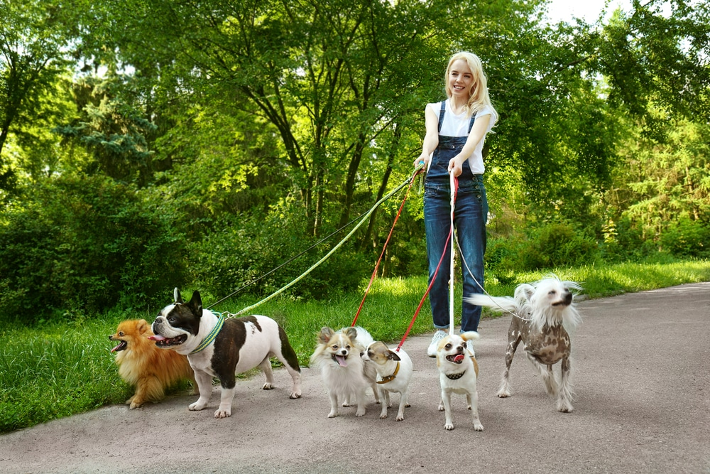

If you work long hours, just welcomed a new puppy into your home, or simply want your pup to get more exercise – our midday dog walking might be just for you!
Typical Visit:
We offer a variety of activities during scheduled visits including, but not limited to, feeding, fresh water, walking, running, playtime, administering medications,ear scratches and belly rubs providing treats and so much more! To keep you up to speed on the day’s activities, every visit ends with a personalized message that is emailed directly to you so you’re in the know, even when you’re on the go!
|
 |